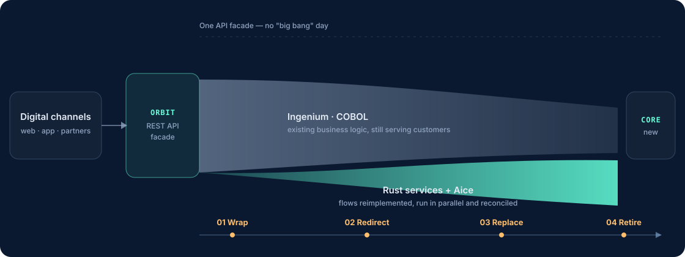

Platform costs keep climbing
AIX, IBM MQ and WebSphere are proprietary licences whose maintenance cost rises every year while the capability stays the same.
Nexus already runs on a live Ingenium system. The rest of the ecosystem is still being built.
Contact us by emailFor insurers running Ingenium · COBOL · AIX · IBM MQ
BENOVA — a next-generation insurance core ecosystem, built to move you off the legacy platform onto modern cloud-native infrastructure without interrupting operations.
Keep your business logic · Your Ingenium licence untouched · Cloud, on-premise or hybrid
The problem
Ingenium has run your business correctly for decades. What is no longer sustainable is the cost of running it, the speed of shipping on it, and the talent pool around it.
AIX, IBM MQ and WebSphere are proprietary licences whose maintenance cost rises every year while the capability stays the same.
The engineers who know COBOL are retiring. Hiring replacements is close to impossible and retraining takes years.
Hour-long compiles, manual deployments, no REST API — every new digital channel or partner needs another layer of patched-together middleware.
DEV/SIT/UAT drift away from PRD over time, producing "works here, breaks there" defects and audit gaps.
Replacing the whole core is a multi-year programme with very high risk. BENOVA takes a different route.
Core ecosystem
BENOVA = B + ENOVA. B is Binean, the company behind the platform. ENOVA is five elements: Engine orchestrates, Nexus operates, Orbit opens the core, Vista handles experience and AI Agent accelerates. Each element solves one layer of the modernization problem and can be adopted independently, in whatever order suits you.
Orchestration framework
The orchestration framework of BENOVA, made up of several independent projects. Its core is Spine: a Flow defines the process, each run is a Process, and a Process produces Tasks handed to an Agent. Spine deliberately does not classify Agents — the same slot can be a person, a service, or an AI Agent.
The event-driven workflow model inside Engine. A Flow is an immutable, versioned process definition, a Process is one run, a Task is one unit of work. The specification is written first; the implementation and conformance tests exist to prove the specification correct.
Not a passive router: Basal is the single authority over navigation, and it actively drives the processing loop. It owns the Process lifecycle, Task state transitions, join conditions and recovery.
An Agent that ships inside the core and handles the mechanical work of every Flow: compiler-generated gateways, script-driven data binding, and calling another Flow as a Skill to start a child process.
A separate project inside Engine, in development, covering scheduling and timeout supervision. The goal: no Task ever hangs silently — an overdue Task raises an event, a compensation and an alert.
DevOps for Ingenium
A DevOps toolchain built specifically for Ingenium, running inside VS Code. It turns risky manual operations into standardized, repeatable pipelines.
Hybrid service host
Where the old and the new run side by side. Orbit hosts new Rust services and legacy Ingenium behind a single API facade — the technical foundation for the Strangler Fig strategy.
Flow & task management
A user interface designed around flows rather than screens. A user starts a flow, the system creates a process, the process produces Tasks and assigns them to a machine, a human or an AI.
Artificial intelligence
AI is not a feature bolted on the side; it is a kind of Agent, on equal footing with humans and machines. The AI Agent receives Tasks from Spine exactly as any other Agent does — so work can be handed over piece by piece.
How you adopt it
Orbit wraps around Ingenium and tightens on one business flow at a time: the new flow runs on Rust and AI while the old one keeps serving customers. Once a flow is stable on the new platform, the corresponding COBOL is retired. There is no "big bang" day.
Orbit sits in front of Ingenium and exposes the core as REST APIs without changing a single line of COBOL.
Basal routes each business flow: modernized flows go to Rust/AI, the rest still go to Ingenium.
Tasks are reimplemented in Rust or handed to the AI Agent, run in parallel and reconciled against the legacy result.
Once every flow runs on the new platform, the corresponding COBOL is retired, on the schedule you choose.

Benefits
Every benefit maps to a specific technical change — not a slogan.
Answers: Platform costs keep climbing
Orbit removes the MQ middleware; new services are containerized and orchestrated with Kubernetes. The more flows you move, the smaller the licensed footprint you keep paying for.
Answers: The COBOL talent pool is shrinking
Rust engineers are scarce too — the difference is that the Rust community is still growing while COBOL only shrinks. More importantly: Nexus standardizes build and deployment, so less work strictly requires a core specialist, and you do not need to write Rust yourself to use Nexus or Orbit.
Answers: Too slow for digital delivery
Parallel compilation and automated deployment replace manual steps. REST APIs are already there, so new channels and partners do not wait on a bespoke middleware layer.
Answers: Operational risk accumulates
Nexus rebuilds DEV/SIT/UAT from a versioned baseline and shows schema and reference-data differences against PRD — no more "works here, breaks there". Credentials are encrypted, and batch jobs are scheduled and alerted instead of run by hand.
You keep your business logic, your data and your ownership. BENOVA integrates with Ingenium; it does not replace your licence or modify its source.
If you run Ingenium, start with Nexus — it already runs on a live system. For Engine, Orbit, Vista and the AI Agent, we would rather build alongside someone who actually operates a core than guess at it.
Email only, no commitment. We will be straight about what works today and what does not.